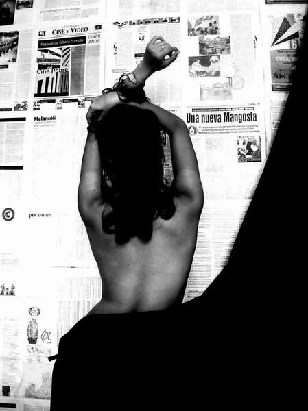
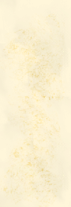

|
TANIA Tania abrió la puerta con gesto nervioso.
Todo lo que hacía tenía esa suerte de apremio
inminente que le quitaba gracia a los movimientos y desesperaba a los
ojos. Nos dijo, de carretilla, que la esperáramos en la sala
mientras se bañaba y cambiaba de ropa, para luego perderse
en el interior del apartamento. Tenía mucho que limpiarse,
es cierto. No sólo el sudor, sino también el semen
(que en casa de Tony sólo había
disimulado pasándose una toalla húmeda) de dos
hombres. Nosotros dos. Nos quedamos en la
puerta. Pero como no teníamos ganas de hablar pronto nos
vimos vagando desordenadamente, como a la deriva, por aquella sala.
La habitación estaba amueblada con gusto
antiséptico. Las paredes simulaban la brillante claridad de
los laboratorios, acentuada por las luces frías. Unos pocos
platos repujados en metal colgaban aquí y allá;
intentaban hacer tímida competencia a la más
ostentosa colección de títulos y diplomas. Varios
de los mismos había sido (a juzgar por el idioma en que
estaban escritos) otorgados en el extranjero. Muebles de
diseño sobrio y colores oscuros se replegaban en las
esquinas. Una repisa con unos pocos adornos esparcidos
simétricamente completaban la decoración.
Fue frente a esta repisa donde me detuve, a contemplar aburrido los
adornos. Pero a los pocos segundos estaba hipnotizado por un frasco de
cristal grueso, de treinta centímetros de alto y tapa como
copa, que contenía un feto. El niño flotaba
frente a mí. Dormía, tranquilamente, sumergido en
un líquido cenagoso. La cabeza era desproporcionadamente
grande en relación al cuerpo, fláccido y
encorvado. Una mano retorcida a la altura de los labios remendaba el
gesto de chuparse el dedo. Por alguna razón, aquella
criatura me daba espanto. Con cada pequeña
vibración del fluido, con cada onda que acariciara su
cuerpo, me estremecía. Lo observé con
detenimiento y comprendí de dónde
provenían mis miedos: el niño parecía
que iba a despertar a cada instante.
- ¿Te gusta? - Me preguntó Tony
acercándoseme por la espalda. No pude evitar un sobresalto.
- No, para nada. - Respondí cuando logre asir mis nervios. -
Lo encuentro bastante repulsivo en realidad. ¿A
quién carajos se le ocurre poner esto en la sala, como si
fuera un adorno?
- A mi me parece una ocurrencia simpática.
Miré a Tony con asombro. Lo decía en
serio. Pero a mí no se me ocurría ninguna
razón para llamar a aquello simpático, y menos
ocurrencia. Tony se volvió hacia mí
y habló:
- ¿Sabes que es su propio hijo? - Sonrió ante mi
azorado rostro.- Sí, en serio. El esposo de Tania es un
científico bastante conocido. Cuando ella se hizo el aborto,
él convenció a los médicos (que seguro
eran amigos suyos) de que lo dejaran conservar el feto. Y como el tipo
es una lumbrera y tiene un montón de relaciones
además, se lo dejaron llevar a casa. Lo metió en
ese frasco de formol y allí lo tienes.
Miré a la repisa del aparador horrorizado. Intuitivamente di
un paso atrás.
- No tienes el estómago muy fuerte, ¿verdad,
hijo? - sentí que una voz magnánima
decía a mis espaldas. Un hombre como de sesenta
años, de elevada estatura y pelo blanco, entró
en la sala y se sentó en un sillón cerca de la
puerta. Después me miró con ironía.
Sus gestos eran aún altivos y parsimoniosos. La edad
parecía no haber llegado más que para acentuar su
majestuosidad, que imponía un respeto hondo y
sin réplicas.
Enmudecí, intimidado. Me sentía en presencia del
doctor Frankestein.
- ¿Y Tania? - preguntó Tony.
- Ya viene. Se está acicalando. Uds. saben como son las
mujeres. No pueden salir ni a la esquina sin pasarse dos horas ante un
espejo. Mucho menos a una fiesta, sin antes repasar cada detalle de su
apariencia.
- Sí, claro. - convino Tony, y se
dirigió a la puerta. El científico lo
siguió con los ojos.
Nadie me prestaba atención ahora. Estaba sólo con
aquel proyecto frustrado de hombre, sumergido en formol.
- ¿A ti también te gusta mamá?
- ¿Qué? - la voz venía del frasco.
- ¿Que si te gusta mamá? A Tony
parece que le gusta mucho. últimamente ha venido a buscarla
casi todos los fines de semana.
- No tengo el placer de conocerla. - mentí. Un par de horas
antes Tony me había abierto la puerta
cubriéndose apenas con una toalla y una sonrisa
pícara. A un gesto suyo lo seguí hasta el cuarto.
Tania estaba allí, tendida boca abajo. Un tatuaje de
contorno triangular nacía de las nalgas sudadas y se
extendía por la espalda. El pelo ensortijado
resplandecía de humedad también. A ella no le
basta con uno. Si tienes ganas, te lo va a agradecer. Creo que
sí. Pero vete. No, que se quede, a mi me gusta que me vean,
dijo ella volviendo la cabeza hacía mí. Tuve la
sensación de que me evaluaba.
- Seguro te va a gustar mucho. A todo el mundo le gusta. No es como mi
viejo, introvertido y callado. Ni siquiera habla conmigo sino de tarde
en tarde. Ella no. Ella se sienta allí, en ese
butacón y hablamos por horas. - No pude evitar imaginarme la
escena. Tania en el mueble oscuro, acomodada, con un libro de historias
infantiles abierto sobre los muslos, leyéndole de
príncipes y gigantes, de un mundo no menos real que aquel
que habitaba su hijo.
- Espera. - Regresé de mis fantasías
súbitamente, acorralado por una duda inquietante. - Tania es
tu madre y él tu padre. Ellos son entonces...
¿esposos o algo?
- No, nunca se han casado.
- Pero están juntos, ¿no?
- Sí, desde hace... como diez años. Tres antes de
que yo naciera.
Era obvio que estaba en un error. Pero me dio pena corregirlo.
Miré a Tony. De espaldas a mí en el umbral de
la puerta. Había encendido un cigarro y conversaba con el
científico. Sus palabras no me llegaban. Flotaban a su
alrededor como el humo del cigarro, y se disipaban antes de alcanzarme.
En este instante nada puede alcanzarme. Estoy como hundido en el
tiempo. Hablando solo supongo, o pensando que hablo.
- A él no le importa.
- ¿Qué? ¿Quién? - dije
sobresaltado de nuevo, y empecé a temer que todo el
incidente influyera en mi salud mental.
- A papá, no le importa que Tony salga con
mamá. Sabe lo que está pasando y no le importa en
lo absoluto.
- ¿Ella te lo contó?
- Ella me lo cuenta todo. También a papá.
Me volví hasta que pude ver el butacón a mis
espaldas. Ahora Tania estaba sentada con una taza de café y
rostro ojeroso. Tosía mucho. Y le contaba a su hijo qué
había hecho durante la noche, la fiesta, los tragos, los
hombres que había conocido. El niño
quizás la aleccionaba desde su frasco, como un adulto, como
si fuera su padre en vez de su hijo.
- No lo critico ¿sabes? Pero no creo que lo entienda del
todo. - hablé francamente con el feto. - Que ella se le
escurra de vez en cuando... ok. En definitivas hay muchas que lo
hacen. Sobre todo con la diferencia de edad y todo eso. Ahora, que
él le permita a su mujer salir y acostarse con otros hombres
(porque supongo que Tony no habrá sido el
primero), es ya bastante fuerte para mí. Y si para colmo se
cuentan las historias y todo eso... No, no lo entiendo.
- Para mí todo el asunto es muy natural.
- No lo tomes a mal, pero no hay nada natural con respecto a ti. A lo
mejor desde
esa repisa las cosas se ven de manera completamente distinta, pero
créeme,
en el mundo real este tipo de situaciones no son tan naturales.
- ¿Qué te hace pensar eso?
- Bueno, a la mayoría de la gente, al menos, -
intenté matizar lo
más posible mis palabras para no ofenderlo - les preocupa
como los ven
los demás. Y como eso de compartir la mujer no es usual,
puede dar lugar
a chismes y situaciones difíciles. - Terminé la
frase mecánicamente,
sin pensar ya en lo que decía. Mi mente se había
transportado dos
horas al pasado. Tania boca abajo, gimiendo. Mientras Tony
me alentaba desde
una esquina del cuarto. Dale más duro, a ella le gusta que
le den duro. ¿Así? ¡eh?
¿así?
decía yo compartiendo sus carcajadas.
- Se trata de simples convenciones sociales sin sentido alguno. A las
que la gente
teme por pura hipocresía. En realidad, tienen sus
raíces en la religión.
Sobre todo en la cristiana que es tan represiva con respecto a la
sexualidad.
 - De acuerdo, pero ya que existen algún sentido tendrán, ¿no?
- Ninguno. Precisamente ese es el lado oscuro del asunto. Seguro me
concederás
que somos animales. Simplemente animales.
- Sí. Claro. Pero entre los animales que viven juntos, de
manera más
o menos organizada, también hay normas de conducta. - El
cuarto giraba
a mi alrededor. Sentí una gota de sudor caer por mi pecho y
enredarse
entre los pelos del pubis. Ahora te voy a dar por el culo. No.
Cállate.
Y le aplaste el rostro contra la almohada. Duro, como te gusta. La
guata silenció sus
gritos.
- Normas que imponen siempre los fuertes, ¿cierto? El
hombre, a diferencia
de lo que ocurre con los animales que son marionetas de sus instintos,
tiene
suficiente razón y sobre todo libertad, para sacudirse de
arriba el yugo
de esas normas y actuar de acuerdo a sus propias ideas.
No estaba en condiciones de seguir aquella discusión
teórica. Frente
a mis ojos se presentaba una y otra vez el cuarto de Tony.
Y Tania gimiendo bajo
mi peso. Abriéndose las nalgas mientras mordía la
almohada.
- ¡Oye! - Me sacó de mi abstracción el
feto. Su autoridad
era tiránica. - ¿Me estás escuchando?
- Preguntó
dulcemente ahora.
- Sí, lo siento.
- Mi viejo sabe lo que hace. A mi mamá le gusta el sexo. Si
la naturaleza
la hizo cual es, ¿quién es él para
corregirla? Por lo tanto,
le permite que exprese esa inclinación natural sin tapujos.
De lo contrario,
la haría infeliz e insatisfecha. Y ¿en virtud de
qué? ¿De
normas sociales completamente ilógicas y arbitrarias,
dictadas por personas
sin suficientes conocimientos para hacerlo mejor?
Tuve que hacer acopio de fuerzas. Me levanté exhausto. Hale
del extremo
del preservativo, y lo lancé al suelo. Ella se
volvió resplandeciente,
ya no de sudor, sino de alegría. Me
guiñó un ojo y se estiró cuan
larga era sobre las sábanas, tensando los brazos y las
piernas. El gesto
me sugirió un renacer.
- Algo está claro, sabes argumentar. - halagué al
feto sinceramente.
La encía sin dientes mostró todo el orgullo de
que era capaz la
criatura. - Tu viejo te ha enseñado mucho.
- Y tú resultas un buen oyente. Aunque, la verdad,
deberías tratar
de ser menos transparente.
- ¿Qué?
- Sí, tus emociones se manifiestan en la cara como si fueras
de cristal.
Se pueden leer casi sin necesidad de esforzarse. - El feto, mientras
hablaba,
había ido adoptando una postura más erecta. Se había
envanecido de tal forma, que hasta parecía haber crecido
dentro del frasco.
- Todo este tiempo has estado temiendo que te descubra. Que me entere
de que
estuviste con mamá. Francamente, ha resultado muy divertido.
Quizás
hasta temías que se lo dijera a papá,
¿verdad? Claro que
para los científicos estas cosas no tienen importancia,
porque debes saber
que ni a él, ni a mí, nos importan en lo absoluto.
- Esperó un momento
y estudió mi semblante con sorna. Supongo que espiaba alguna
emoción.
Por mi parte, ser aleccionado por un feto me causaba fastidio. - Eres
un poco
primitivo en tus emociones. Es lógico, cuando no se cultiva
el intelecto
el corazón queda en manos de groseros prejuicios. A pesar de
que la gente
inculta cree otra cosa, el refinamiento de...
- Después de oírte ya no me parece tan repulsivo
que te guardaran.
- Lo interrumpí violentamente. Me había
disgustado con su altanería.
- Eres como el souvenir de un embarazo. O sea, después de
todo eres un
simple pedazo de carne. No eres un niño todavía,
sino una suerte
de quiste. Es, ¿qué se yo? como la gente que pone
los huevos sobre
el refrigerador. - El feto ya no parecía tan alto ni
erguido, así que
lancé un último ataque. - No hay ninguna
razón para botarte
por el tragante, como harían sin duda en el hospital. Hacen
flush a la
cadena y allá va toda tu sabiduría y tu persona.
La criatura se agitaba dentro del frasco como si tuviera hipo. Daba la
impresión
de que en cualquier momento iba a empezar a llorar. Hubiera
sonreído,
pero me embargó una pena tierna como el olor de los
niños. -----------
- ¿Quieres ir a una fiesta esta noche? - me
preguntó Tony cuando
regresó al cuarto.
- Sí. - me puse en pie y me vestí.
- Ok. Te doy la dirección y nos vemos allá.
- Pensaba quedarme aquí un rato. Así que
podríamos salir
juntos.
- ¿No vas a buscar a Dalila?
- No. Nos peleamos.
- Y eso...
- Es complicado. En realidad no tanto. Ella quiere tener un hijo y yo
no.
- Deberían tenerlo. O sea, no es asunto mío. Pero
Uds. llevan juntos
como cinco años ¿no?
- Seis.
- Ahí tienes. Eso es más que suficiente.
- Depende de como lo mires.
- Siempre estás enredando las cosas. Mejor te bañas,
porque hueles fatal. Cuando acabes, nos hacemos algo de comida y luego
pasamos
por casa de Tania.
- ¿Ella va?
- Claro, no me estás oyendo. -Tania se había
bajado de la cama
y buscaba algo a gatas. Era gracioso ver como se balanceaban las
nalgas. - Por
cierto, habla con el viejo. Es un tipo con unas ideas un poco raras,
pero super
libres. Y como tú siempre estás en eso de la
filosofía, seguro
se entienden.
- Tú le hiciste el tatuaje.
- Si, esto de hoy fue el pago. O como la tercera vez que me paga, en
realidad.
- y sonrió plenamente. - Nunca había visto a una
persona tan interesada
en pagar en toda mi vida. Por lo general es al revés.
- Te quedó bien.
Tania,
mientras tanto, había encontrado lo que buscaba. Se
irguió.
Giró el tronco como una contorsionista y repasó con la toalla su piel donde quiera que
encontró algo de
semen. Sostenía la toalla
con la mano
derecha, mientras que con la izquierda separaba las nalgas. El culo se
había
acomodado al uso. Por el agujero abierto, pensé,
cabría sin dificultad
un doblón español. La dejé con su
limpieza de gato y me
fui al baño. A darme una ducha como Dios manda.
- ¡Oye! ¿Estás sordo o qué?
- me apremiaron.
- Lo siento, me distraje. - dije desconcertado.
A mi lado estaba Tania completamente vestida y lista para la fiesta. El
feto
había vuelto a ser una masa blanca que flotaba inerte.
- Nos vamos. - casi me ordenó Tony. El
científico estaba a su lado.
Leía atentamente una revista. Levantó a penas la
vista para despedirse
de nosotros.
Mientras cruzaba el umbral de la puerta, volví la cabeza por
encima del
hombro. Di una última mirada de reojo a aquella sala. En
especial, al
frasco de formol que descansaba sobre la repisa. Desde allí,
el feto me
despidió con un gesto malévolo.
|
||||||||||
|
|
